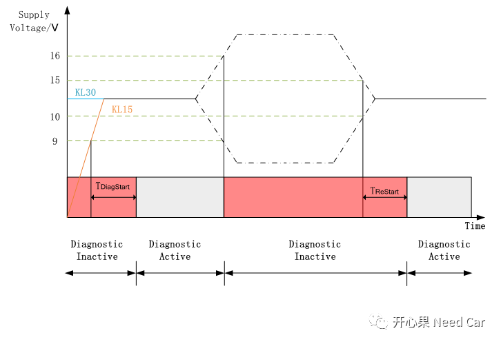

开心果 Need Car · 2022-01-06T20:21:00+08:00 · 微信原文
Autosar诊断模块可以说是任何ECU开发必不可少的模块，对于嵌入式开发，我想车圈的朋友都不陌生，即使不做该模块，也会和该模块产生各种各样的交互。诊断也是实际开发中，出问题最多的模块，诊断NRC优先级问题、DTC乱报等等。前面我们聊过诊断的开启条件，可以回顾：通信诊断监控开启条件，本文聊聊诊断激活的电压与时间参数关系。
诊断激活：诊断电压与诊断时间关系

上图中的电压值因ECU不同而有所不同，具体开发中先明确开发使用ECU的诊断电压范围，本例以9~16V为例。
上图包含的信息我们逐一分析：
（1）先明确开发的ECU是否有KL15硬线，如果没有，则橘黄色的KL15电压没有，即只有蓝色的KL30长电。有些ECU的KL15信号（放在某个应用报文中）由网关转发过来，这样的ECU没有KL15硬线，对应的Nodes也没有KL15硬线。
（2）如果ECU有KL15硬线，当KL15由OFF到ON切换时，电压需要达到诊断功能所需的最低电压阈值，且延迟一段时间（TDiagStart）后，诊断相关的功能才能有效，对应的DTC Monitor功能才能开启。这里的TDiagStart时间参数设置要根据需求而定，比如1500ms±100。为什么要有这个时间参数呢？一般来说，电压恢复稳定需要一段，为了稳定电压值，需要延长一段时间再开启诊断监控功能，避免误报DTC。
（3）一般来说，诊断激活的电压有一个范围，本例：9~16V。即诊断相关的功能只有在此电压范围内才能生效，否则诊断功能是无效的。比如超过16V或者低于9V，Diagnostic Monitor失效，DTC不再上报给DEM。
（4）当电压超过阈值又再次恢复时，可能因需求不同而有所差异，本例中，当诊断电压超过16V，恢复到15V时，诊断功能恢复；当诊断电压低于阈值9V，恢复到10V时，诊断功能恢复。当诊断电压超过阈值或者低于阈值，恢复时也有一个时间参数（TReset），TReset主要目的也是确保电压恢复稳定。比如500ms±50。
这里还需要讨论一种情况，即KL15信号由网关转发过来，如果KL15信号由OFF->ON->OFF变化，此变化是否为一个操作循环，是否需要有一个类似TReset的诊断开启时间，避免误报DTC。
（5）一般来说，电压获取有一个误差值，如±0.3V。实际测试中，低于8.7V还上报DTC，则说明开发有问题。之所以给一个误差值，一方面考虑电压读取误差，另一方面要考虑部分负载带来的压降问题。测试时，正常的诊断功能开启电压范围是8.7~16.3V。此范围内，进行DTC故障测试，$19服务读取不到测试的当前故障、历史故障，测试要给提bug啦。
往期精彩回顾